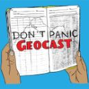
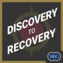
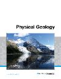

Geology Bites
Short interviews with geologists about their research. Pick episodes by topic.
ListenPodcasts, lectures and reference sites I recommend to students.
Optional
Free outside resources. Not part of any module or assessment, and not endorsed by Cardiff University Kazakhstan.
Next step
How to find a supervisor, and where positions are posted.
Read the guideListen
Short interviews with geologists about their research. Pick episodes by topic.
Listen
AGU's podcast about Earth and space scientists and how they work.
Listen
Two geoscientists talking through new papers and field methods.
Listen
SEG's podcast on ore deposits, from exploration through to mining.
ListenWatch and read

A full intro course: lecture notes, problem sets and lab exercises.
Open the courseShort videos on plate tectonics, earthquakes and the Earth's interior.
WatchRecorded talks by USGS scientists: volcanoes, earthquakes, water, climate.
Watch
Free open textbook. Good for revising the basics.
ReadLook it up
Any mineral or locality: properties, photos, where it occurs.
Search Mindat